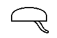
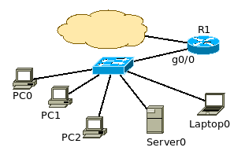

Ez a dokumentum a Csengő Bt. irodájának hálózatát mutatja be.
A hálózat egy R1 nevű vállalati routeren keresztül kapcsolódik az Internethez, a g0/0 interfészen. A router mögött található egy 24 portos switch, amin jelenleg 5 végpont található.

Az IP címek a 192.168.20.0/24-s hálózatból vannak kiosztva.